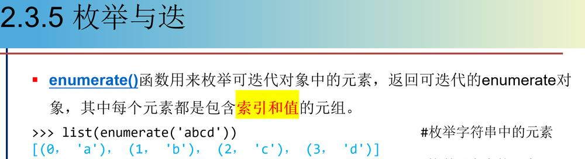
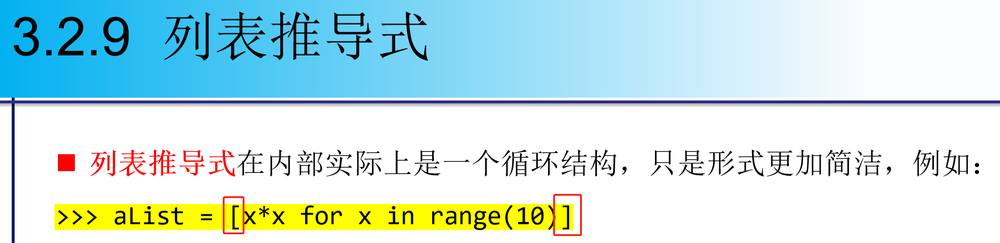

第 1 页 · 3.3.3 序列解包
3.3.3 序列解包
可以使用序列解包功能对多个变量同时赋值。
>>> x, y, z = 1, 2, 3 #多个变量同时赋值
>>> v_tuple = (False, 3.5, 'exp')
>>> (x, y, z) = v_tuple
>>> x, y, z = v_tuple
>>> x, y, z = range(3) #可以对range对象进行序列解包
>>> x, y, z = iter([1, 2, 3]) #使用迭代器对象进行序列解包
>>> x, y, z = map(str, range(3)) #使用可迭代的map对象进行序列解包
>>> a, b = b, a #交换两个变量的值
>>> x, y, z = sorted([1, 3, 2]) #sorted()函数返回排序后的列表
>>> a, b, c = 'ABC' #字符串也支持序列解包
>>> x = [1, 2, 3, 4, 5, 6]
>>> x[:3] = map(str, range(5)) #切片也支持序列解包
第 2 页 · 3.3.3 序列解包
3.3.3 序列解包
序列解包对于列表和字典同样有效。
>>> a = [1,2,3]
>>> b,c,d = a
>>> s = {'a':1, 'b':2, 'c':3}
>>> b, c, d = s.items()
>>> b #Python 3.6之后的版本和Python 3.5之前的版本结果略有不同
('a', 1)
>>> b, c, d = s #使用字典时不用太多考虑元素的顺序
>>> b
'a'
>>> b, c, d = s.values()
>>> print(b, c, d)
1 2 3
第 3 页 · 3.3.3 序列解包
3.3.3 序列解包
序列解包遍历多个序列
>>> keys = ['a', 'b', 'c', 'd']
>>> values = [1, 2, 3, 4]
>>> for k, v in zip(keys, values):
print((k, v), end=' ')
('a', 1) ('b', 2) ('c', 3) ('d', 4)
第 4 页 · 使用序列解包遍历enumerate对象
使用序列解包遍历enumerate对象
>>> x = ['a', 'b', 'c']
>>> for i, v in enumerate(x):
print('The value on position {0} is {1}'.format(i,v))
The value on position 0 is a
The value on position 1 is b
The value on position 2 is c
3.3.3 序列解包

第 5 页 · 3.3.3 序列解包
3.3.3 序列解包
>>> aList = [1,2,3]
>>> bList = [4,5,6]
>>> cList = [7,8,9]
>>> dList = zip(aList, bList, cList)
>>> for index, value in enumerate(dList):
print(index, ':', value)
0 : (1, 4, 7)
1 : (2, 5, 8)
2 : (3, 6, 9)
第 6 页 · 3.3.4 生成器推导式
3.3.4 生成器推导式
生成器推导式的结果是一个生成器对象。使用生成器对象的元素时，可以根据需要将其转化为列表或元组，也可以使用生成器对象__next__()方法或内置函数next()获取下一个元素，或者直接将其作为迭代器对象来使用。
生成器对象具有惰性求值的特点，只在需要时生成新元素，空间占用非常少，尤其适合大数据处理的场合。
不管用哪种方法访问生成器对象，都无法再次访问已访问过的元素。

第 7 页 · 3.3.4 生成器推导式
3.3.4 生成器推导式
使用生成器对象__next__()方法或内置函数next()进行遍历
>>> g = ((i+2)**2 for i in range(10)) #创建生成器对象
>>> g
<generator object <genexpr> at 0x0000000003095200>
>>> tuple(g) #将生成器对象转换为元组
(4, 9, 16, 25, 36, 49, 64, 81, 100, 121)
>>> list(g) #生成器对象已遍历结束，没有元素了
[]
>>> g = ((i+2)**2 for i in range(10)) #重新创建生成器对象
>>> g.__next__() #使用生成器对象的__next__()方法获取元素
4
>>> g.__next__() #获取下一个元素
9
>>> next(g) #使用函数next()获取生成器对象中的元素
16
第 8 页 · 使用for循环直接遍历生成器对象中的元素
使用for循环直接遍历生成器对象中的元素
>>> g = ((i+2)**2 for i in range(10))
>>> for item in g: #使用循环直接遍历生成器对象中的元素
print(item, end=' ')
4 9 16 25 36 49 64 81 100 121
3.3.4 生成器推导式